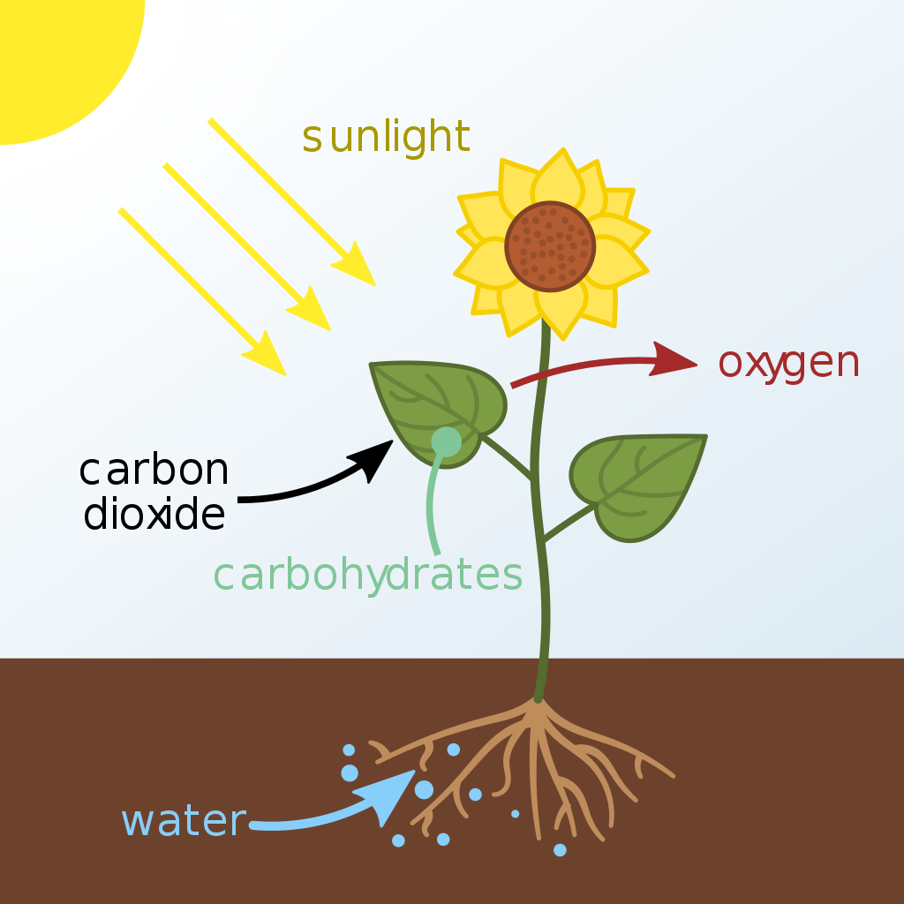

Home|Photosynthesis

Photosynthesis is a process used by plants and other organisms to convert
light energy into chemical energy that can later be released to fuel the
organisms' activities. This chemical energy is stored in carbohydrate
molecules, such as sugars, which are synthesized from carbon dioxide
and water – hence the name photosynthesis, from the Greek φῶς, phōs,
"light", and σύνθεσις, synthesis, "putting together".
In most
cases, oxygen is also released as a waste product. Most plants,
most algae, and cyanobacteria perform photosynthesis; such organisms
are called photoautotrophs. Photosynthesis is largely responsible for
producing and maintaining the oxygen content of the Earth's atmosphere,
and supplies all of the organic compounds and most of the energy necessary
for life on Earth.
In photosynthetic bacteria, the proteins that gather light for photosynthesis
are embedded in cell membranes. In its simplest form, this involves the membrane
surrounding the cell itself. However, the membrane may be tightly folded into
cylindrical sheets called thylakoids, or bunched up into round vesicles called
intracytoplasmic membranes. These structures can fill most of the interior
of a cell, giving the membrane a very large surface area and therefore increasing
the amount of light that the bacteria can absorb.